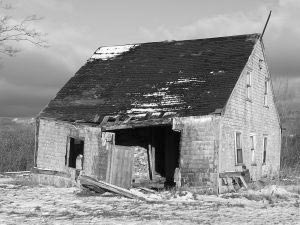

Mountain View - Wales
|  |
An outstanding six bedroomed Georgian house, which has been stylishly and comprehensively refurbished by the current owners to create an extremely comfortable and elegant home. Set in secluded and secure grounds just a stonethrow away from the Welsh border.
£POA